Bei umfangreichen Bauarbeiten in der Nähe des Gleisbereichs (Hochbau, Tiefbau, Spezialtiefbau, Ingenieurbau) wird beidseits der Gleisanlage eine Feste Absperrung (FA) (Kap. 2.2) angeordnet, um das unbeabsichtigte Hineingeraten von Beschäftigten in den Gleisbereich auszuschließen und um die Grenze des Arbeitsbereichs, bis zu der keine Gefährdungen durch den Bahnbetrieb bestehen, eindeutig zu kennzeichnen. Vor Zugfahrten hinter der FA wird bei der DB im Regelfall nicht gewarnt. Der gleisseitige Bereich hinter dem Absperrzaun darf ohne Einrichtung einer Sicherung auch kurzzeitig nicht betreten werden.
Wenn der Gleisbereich hinter der FA z. B. für Messarbeiten kurzzeitig betreten werden soll (Abb. 3-6) muss dies der für den Bahnbetrieb zuständigen Stelle (BzS) angezeigt werden (DB: Seite 1 des Sicherungsplans [25]). Das kurzzeitige Betreten des Gleisbereichs hinter der FA ist nur dann zulässig, wenn eine Sicherungsmaßnahme eingerichtet ist, z. B. Sperrung des Gleises oder Warnung durch AWS (Kap. 2.3) oder Sicherungsposten (Kap. 2.5).
Wenn bei großem Abstand zwischen Arbeitsbereich und Gleisanlage ein Hineingeraten in den Gleisbereich auszuschließen ist, können die erforderlichen Sicherungsmaßnahmen auch ausschließlich in der Verantwortung des ausführenden Unternehmers liegen. Dann kann z. B. eine Arbeitsanweisung ausreichend sein, von den Gleisanlagen Abstand zu halten, ggf. in Verbindung mit einer sichtbaren Abgrenzung
(z. B. eine rot/weiße Kunststoffkette). Eine sichtbare Abgrenzung ist keine eigenständige Sicherungsmaßnahme [16]. Wird auf beiden Seiten der Gleisanlage gearbeitet – wenn z. B. bei einer Horizontalbohrung Start- und Zielbaugrube oder bei einer Brückenbaustelle die Widerlager beidseits der Gleisanlage erreicht werden müssen – ist dafür Sorge zu tragen, dass
Bahnübergang erreichen zu können oder bei umfangreichen Arbeiten durch einen Behelfsübergang,
Wenn Verkehrswege zur Arbeitsstelle Gleisanlagen queren, sind Sicherungsmaßnahmen einzurichten, z. B. eine Postensicherung für festgelegte Wege (z. B. Bohlengänge) oder Behelfsüberwege, die nur nach Gleissperrung geöffnet werden, Abb. 12-2. Maschinenteile oder angeschlagene Lasten dürfen keinesfalls in Betriebsgleise hineinragen oder hineingeschwenkt werden. Lässt sich dies nicht sicher ausschließen, z. B. beim Versetzen von Großflächenschalung oder beim Rammen von Spundbohlen dicht am Gleis, muss das betreffende Gleis gesperrt werden. Materialien (z. B. Spundbohlen, Großflächenschalung) sind so zu lagern, dass sie nicht ungewollt in Bewegung geraten können. Die von der für den Bahnbetrieb zuständigen Stelle festgelegten Mindestabstände für die Materiallagerung in der Nähe des Gleisbereichs müssen dabei eingehalten werden (für DB vgl. Anhang 3).
Wenn akustisch gewarnt wird (automatische Warnsysteme, Postensicherung) muss die akustische Projektierung die Störschallpegel der schallerzeugenden Maschinen
(z. B. Erdbaumaschinen, Rammen, Bohrgeräte) berücksichtigen, vgl. Kap. 2.3. Die optischen Erinnerungsanzeigen müssen auch bei Baustellen, die während der Dunkelheit betrieben und daher gut ausgeleuchtet werden (blend- und schattenfreie Ausleuchtung, Beleuchtungsstärke vgl. [9]), eindeutig erkennbar sein. Die Warnsignalabgabe muss bei der DB im Arbeitsbereich stets akustisch erfolgen, eine nur optische Signalgebung ist auch nachts nicht zulässig [27]. Die optischen Anzeigen sind keine Warnsignale, sondern nur Erinnerungsanzeigen, die die Information geben, dass die Gefährdung durch die Zugfahrt noch besteht.
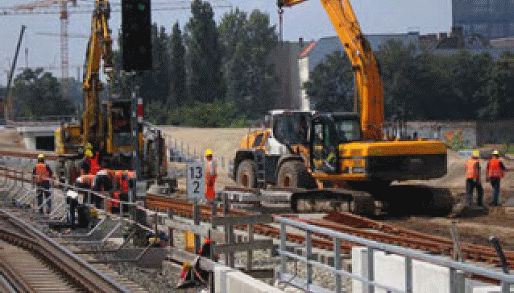
| Abb. 12-1: | Die Feste Absperrung bildet eine klare Trennung zwischen Arbeitsbereich und Gleisbereich. |
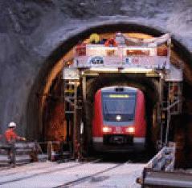
| Abb. 12-2: | Behelfsübergang für Arbeitskräf-Abb. 12-3: Der Bereich hinter der Festen Abte und Maschinen, der nach sperrung darf nicht zur Materiallage- Gleissperrung benutzt wird. rung benutzt werden. Wenn der Zugriff z. B. auf Baustellen-Versorgungsleitungen notwendig ist, ist auch für kurzzeitige Tätigkeiten eine Sicherung erforderlich. |
Über längere Zeit in der Nähe von Fahrleitungsanlagen eingesetzte Großgeräte (z. B. Turmdrehkran), aber auch kurzzeitig eingesetzte Maschinen (z. B. Rammen, Bohrgeräte, Mobilkrane, Betonpumpen) sind in Abstimmung mit der für den Bahnbetrieb zuständigen Stelle (BzS) mit der Bahnerde zu verbinden, wenn die Gefahr besteht, dass Maschinenteile oder angeschlagene Lasten den Mindestschutzabstand zu unter Spannung stehenden Teilen der Fahrleitungsanlage (inkl. Speiseleitungen, Abb. 12-5, und andere Bahnenergieleitungen) unterschreiten, vgl. Kap. 4.2. Damit werden Personen in Maschinennähe im Fall eines Stromübertritts geschützt. Es bietet sich an, in Absprache mit der BzS eine Erdungsverbindung vom Gleis zu einem Fixpunkt außerhalb des Gleisbereichs bereitzustellen, damit die Maschinenführer den Gleisbereich zum Herstellen der Erdungsverbindung nicht betreten müssen, Abb. 12-4. Auch bei anderen mobilen Maschinen (Mobilkrane, Betonpumpen) muss vor jedem Einsatz auf die Herstellung des Erdungsanschlusses geachtet werden.
Auch neben der Gleisanlage muss mit elektrischen Gefährdungen gerechnet werden: Abspanndrähte der Fahrleitung stehen bis zum Isolator, der im Regelfall kurz vor der Abspanneinrichtung am Fahrleitungsmast angeordnet ist, unter Spannung. Auf den Masten von Quertragwerken werden oftmals die Speiseleitungen an Auslegern geführt, die nach außen auskragen, vgl. Abb. 1-2 und 4-1. Auf den Masten können auch andere unter Spannung stehende Betriebsmittel (z. B. Weichenheizungstransformatoren, Schalterantriebe, 15 kV- Speisekabel) befestigt sein.
Bei der DB sind bei Einsatz von Baumaschinen in der Nähe der Oberleitung 15 kV die Sicherheitsmaßnahmen nach Ril 824.0106 [29] zwingend einzuhalten.
Bei Erdbauarbeiten in der Nähe des Gleisbereichs muss der Einsatz aller Erdbaumaschinen und Fahrzeuge genau geplant werden, um elektrische Gefährdungen auszuschließen. Der Kettenbagger unterhalb des Quertragwerkes (Abb. 12-5) bzw. unterhalb der Speiseleitung ist mit Hubbegrenzung und Bahnerdung auszurüsten. Da der Bagger hier als Standgerät eingesetzt wird, ist der Erdungsanschluss einfach herstellbar. LKW dürfen unter den Abspannleitungen und Speiseleitungen nicht kippen, da der Schutzabstand durch das Anheben der Mulde unterschritten werden kann. Das Füllmaterial kann z. B. mittels Planierraupe von der Kippstelle in den Bereich unter den Leitungen verschoben werden.
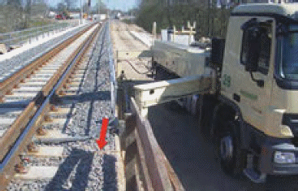
| Abb. 12-4: |
Erdungsanschluss für eine Betonpumpe.
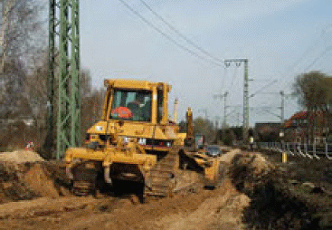
| Abb. 12-5: | Bei Erdbauarbeiten in der Nähe des Gleisbereichs unterhalb von Fahrleitungen muss geprüft werden, ob Gefahr besteht, dass Maschinen oder Fahrzeuge den Schutzabstand unterschreiten. |
Bei Rammen und Bohrgeräten, die in der Nähe des Gleisbereichs eingesetzt werden sollen, muss der erforderliche Arbeitsbereich im Rahmen der Arbeitsvorbereitung sorgfältig ermittelt werden, um sicher auszuschließen, dass Maschinenteile oder angeschlagene Lasten in den Gleisbereich hineingeraten. Lässt sich dies nicht vermeiden, muss das Gleis neben der Maschine zumindest während der kritischen Arbeitsschritte
gesperrt werden.
Während dieser Arbeitsschritte muss auch die Fahrleitung in benachbarten Gleisen ausgeschaltet sein. Rammen und Bohrgeräte in der Nähe elektrischer Leitungen
(z. B. Fahrleitung des Nachbargleises, Abspannleitung, Speiseleitung) müssen mit der Bahnerde verbunden werden. Das Rammgut muss während des Rammvorgangs mit formschlüssiger Sicherung gehalten werden, z. B. mit Knebelkette.
Bei der Ermittlung des Arbeitsbereichs ist zu berücksichtigen, dass liegende Bauteile (z. B. Spundbohlen, Verrohrung, Bewehrungskörbe) von der Maschine aufgenommen und in die Senkrechte gebracht werden müssen. Der Einsatz von Schwenkbegrenzungen an den Maschinen ist i. d. R. nicht sinnvoll, da kein fester Bezug zwischen Unterwagen und Gleisachse besteht.
Müssen die Maschinen zum Erreichen der Arbeitsstelle Gleise queren, sind in Abstimmung mit der für den Bahnbetrieb zuständigen Stelle tragfähige und ebene Überfahrten herzustellen, die auch die Gleisanlage schützen. Bevor die Überfahrt von Maschinen benutzt wird, muss das Gleis gesperrt sein. Werden zu Überfahrten auf Bahndämmen Behelfsrampen hergestellt, müssen die von den Baumaschinen und Fahrzeugen befahrbaren Rampenneigungen berücksichtigt werden.
Bei den Arbeiten in der Nähe des Gleisbereichs ist bei Rammen und Bohrgeräten wegen der Umsturzgefahr durch den hoch liegenden Schwerpunkt besonderes Augenmerk auf die Standsicherheit zu legen. Ein Maschinenumsturz könnte auch katastrophale Folgen für den Bahnbetrieb auf benachbarten Gleisen haben. Durch das Bauunternehmen muss im Rahmen der Arbeitsvorbereitung dafür gesorgt werden, dass die bei den Arbeiten auftretenden maximalen Flächenpressungen (Angabe des Maschinenherstellers je nach Rüstzustand und Arbeitsweise als Maximalwert unter der Laufwerkskette oder unter einer Pratze) die zulässigen Bodenpressungen nicht überschreiten. Im Regelfall ist ein Bodengutachten einzuholen und eine Prüfung durchzuführen (z. B. Lastplattendruckversuch). Die Tragfähigkeit der Maschinenaufstandsfläche kann durch Bodenaustausch oder lastverteilende Unterlagen („Baggermatratzen“) verbessert werden.
Wenn Warnsignale gegeben werden, muss die Signalwahrnehmbarkeit auch bei den hohen Störschallpegeln von Rammen und Bohrgeräten (über 100 dB(A)) gewährleistet sein. Die Kolonnen müssen einen für das Signalhören im Gleisoberbau zugelassenen Gehörschutz tragen (Bemerkung „S“ in der Liste der geprüften Gehörschützer [18]). Eine Wahrnehmbarkeitsprobe zu Schichtbeginn ist immer erforderlich.
Neben der Prüfung von Arbeitsbereich, Bodentragfähigkeit, Signalwahrnehmbarkeit und elektrischer Gefährdung ist es für Rammen und Bohrgeräte im Zuge der Arbeitsvorbereitung erforderlich, dass für die Ramm- bzw. Bohrtrasse die Bestätigung hinsichtlich der Kampfmittelfreiheit vorliegt.
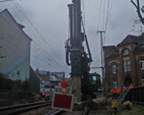
| Abb. 12-6: | Einsatz eines Drehbohrgerätes im Gleisbereich. |
Horizontalbohrungen oder Rohrvortriebe unter Gleisanlagen (Abb. 12-7) müssen durch das ausführende Bauunternehmen grundsätzlich bei der BzS angemeldet werden. Dabei müssen alle vorhersehbaren Anlässe, die einen Aufenthalt im Gleisbereich erfordern können, berücksichtigt werden, damit Sicherungsmaßnahmen vor Betreten des Gleisbereichs durch die BzS geplant und zeitgerecht durchgeführt werden können:
Die Kampfmittelfreiheit der Bohrtrasse muss vor Arbeitsbeginn geprüft und dem ausführenden Unternehmen bescheinigt sein.
Der Verbau von Start- und Zielbaugrube hat auch die Druckkräfte aus dem Gleiskörper aufzunehmen und muss so ausgeführt werden, dass Setzungen der Bahntrasse vermieden werden (z. B. als Gleitschienenverbau im Absenkverfahren, nicht als Plattenverbau im Einstellverfahren).
Bei allen Aufgrabungen in der Nähe des Gleisbereichs müssen die Regelungen des Infrastrukturbetreibers beachtet werden, damit die Standsicherheit der Bahntrasse nicht gefährdet wird [31].
Abhängig vom Umfang der Arbeiten ist anhand einer Risikobewertung durch die BzS festzulegen, welche Sicherungsmaßnahmen erforderlich sind, um ein unbeabsichtigtes Hineingeraten in den Gleisbereich auszuschließen und die Grenze des Arbeitsbereichs eindeutig zu kennzeichnen. Bei ausreichendem Abstand zwischen Gleiskörper und Baugrube kann ein Bauzaun eingesetzt werden (Sicherung gegen Umsturz, Bahnerdung im Rissbereich der Fahrleitung, Abb. 4-7), bei geringem Abstand eine am Schienenfuß anzuschließende FA, Kap. 2.2.
Beim Einsatz von Baggern auf Schotter oder Planum dicht am Gleis ist eine Schutzmaßnahme gegen unbeabsichtigtes Hineinschwenken in den Gleisbereich erforderlich (z. B. Gleissperrung oder Zulassung der Fahrt von der Arbeitsstelle aus), vgl. Abb. 7-20. Ein Fehlverhalten des Maschinenführers, wie z. B. irrtümliches Einleiten einer Schwenkbewegung oder zu spätes Bedienen der Schwenkbremse, sowie Pendeln angeschlagener Lasten, wie z. B. Verbauplatten, müssen bei den Sicherungsmaßnahmen berücksichtigt werden. Eine Schwenkbegrenzung ist in der Situation Abb. 7-20 nicht einsetzbar, da die Bezugsbasis zwischen Baggerunterwagen und Gleis fehlt.
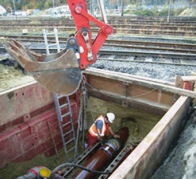
| Abb. 12-7: | Rohrvortrieb unter einer Gleisanlage: Eine Feste Absperrung wäre erforderlich, um das unbeabsichtigte Hineingeraten in den Gleisbereich zu verhindern und die Grenze des Arbeitsbereichs zu kennzeichnen. Der Stirn- verbau muss ergänzt werden. |
Bei Neubauten oder Erweiterungen von Straßen- oder Fußgängerunterführungen werden Hilfsbrücken eingesetzt, um den Bahnbetrieb möglichst wenig zu beeinträchtigen. Bei geringem Abstand zwischen Oberkante Bauwerk und Unterkante Hilfsbrücke entstehen dabei besondere Gefährdungen durch das „Arbeiten unter dem rollenden Rad“:
Um diese Gefährdungen zu vermeiden und die notwendige Qualität zu erzielen, sollten alternative Herstellungsverfahren gewählt werden, mit denen bei einer Betonkonstruktion mit Abdichtung auch die geforderte Qualität erreicht werden kann.
Z. B. kann die Tunneldecke abgesenkt hergestellt und abgedichtet werden. Damit wird der erforderliche Arbeitsraum zwischen Tunneldecke und Hilfsbrücke geschaffen. Nach dem Anheben der Tunneldecke werden die Wände hergestellt. Bei ausreichendem Platz neben der Bahntrasse sollte das ganze Bauwerk seitlich vorgefertigt und eingeschoben werden.
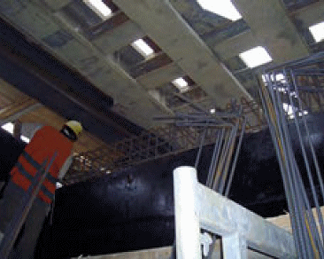
| Abb. 12-8: | Bei den Bewehrungsarbeiten für die Tunnel- wände besteht die Gefahr, dass Bewehrungseisen unbeabsichtigt durch die Hilfsbrücke in den Gleisbereich geraten. |
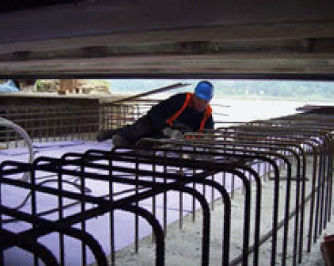
| Abb. 12-9: | Bei unzureichendem Arbeitsraum kann die Tunneldecke nicht fachgerecht hergestellt werden und Betonieren, Oberflächenbehandlung und Abdichten können Anlass geben, die Hilfsbrücke zu betreten. Warnwesten sind geschlossen zu tragen. |
Werden eine Betonpumpe oder ein Mobil- oder Turmdrehkran in der Nähe des Gleisbereichs eingesetzt, sind Maßnahmen erforderlich, um eine Unterschreitung des Schutzabstandes zur Fahrleitung auszuschließen. Dabei sind bei Kranen die Abmessungen der angeschlagenen Lasten, das Pendeln der Last infolge Wind oder Fahrbewegungen zu berücksichtigen (z. B. Drehbewegung von Bewehrungsstahlbündeln). Beim Einsatz von Betonpumpen ist zu gewährleisten, dass die erforderlichen Schutzabstände vom gesamten Verteilermast zu den Gefahrbereichen zu keinem Zeitpunkt unterschritten werden. Besonderes Augenmerk ist auf einzelne Mastabschnitte der Betonpumpe zu legen, die sich beim Verfahren des Endschlauches in Gefahrbereiche hineinbewegen können.
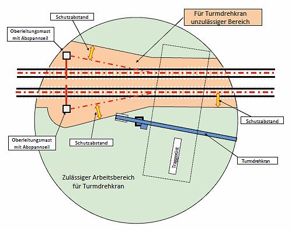
| Abb. 12-10a: | Arbeitsbereichsbegrenzung (ABB) für einen Turmdrehkran, der beim Bau einer Brücke über eine elektrifizierte Bahnstrecke eingesetzt wird: Einstellung der ABB für den Bau der Pfeiler und Widerlager. |
Es muss ausgeschlossen werden, dass Maschinenteile, angeschlagene Lasten oder Kranseile in den Gleisbereich hineingeraten oder den Schutzabstand zur Fahrleitung oder Speiseleitung unterschreiten. Turmdrehkrane in der Nähe von Gleisanlagen sind mit Arbeitsbereichsbegrenzungen auszurüsten, um das Unterschreiten des Schutzabstandes auszuschließen. Bei der Arbeitsbereichsbegrenzung können durch Begrenzung einzelner Kranbewegungen festgelegte Gefahrbereiche nicht angefahren werden. Es wird gewährleistet, dass die Last auch bei Fehlbedienung oder Fehleinschätzung durch den Kranführer nicht über den Gleisbereich geschwenkt werden kann. Bei modernen Turmdrehkranen kann der Teil des 360°-Schwenkkreises, der auf der Baustelle erreichbar sein soll, als beliebige Fläche programmiert werden.
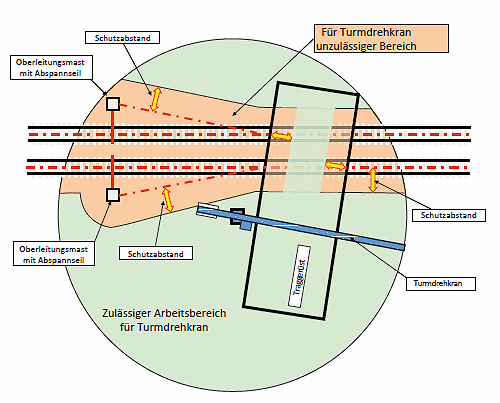
| Abb. 12-10b: | Arbeitsbereichsbegrenzung (ABB) für einen Turmdrehkran, der beim Bau einer Brücke über eine elektrifizierte Bahnstrecke eingesetzt wird: Einstellung der ABB, sobald das Traggerüst über der Bahntrasse geschlossen ist. |
Schwenkbegrenzungen, die nur einen Teil des Schwenkkreises (Kreisausschnitt) ausschließen, sind ungeeignet, wenn sich ein Teil des Bauwerks innerhalb dieses Teils befindet, da sie Anlass zu Manipulationen geben. Mit Arbeitsbereichsbegrenzungen ist dagegen sichergestellt, dass alle erforderlichen Stellen des Bauwerks mit der Hakenflasche erreicht werden können und damit kein Anlass besteht, die Bewegungseinschränkung des Turmdrehkrans zu manipulieren. Bei der Einstellung der Arbeitsbereichsbegrenzung müssen die anzuhängenden Lasten und der Windeinfluss berücksichtigt werden. Der Kran sollte mit Windmessgerät ausgerüstet sein. Abb. 12-10 zeigt für einen Turmdrehkran, der beim Bau einer Brücke über eine elektrifizierte Bahnstrecke eingesetzt wird, die durch die Arbeitsbereichsbegrenzung gesperrten und freigegebenen Arbeitsbereiche.
Bei Mobilkranen sind Schwenkbegrenzungen wegen der fehlenden festen Bezugsbasis zwischen Kran und Gleisanlage nicht sinnvoll. Der Kraneinsatz muss so geplant werden, dass der Schutzabstand zu Fahrleitung und Speiseleitung immer sicher eingehalten ist. Abschrankungen neben der Gleisanlage können dem Kranbediener das Erkennen der Arbeitsgrenze erleichtern, Abb. 4-8.
Krane dürfen nur dann mit Last über Gleise schwenken, wenn diese gesperrt sind, die Fahrleitung ausgeschaltet ist und die BzS zugestimmt hat. Muss ausnahmsweise über nicht gesperrte Gleise geschwenkt werden, ist ein Schutzgerüst in Abstimmung mit der BzS zu erstellen, Abb. 12-11.
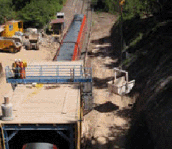
| Abb. 12-11: | Schwenken eines Krans über ein nicht gesperrtes Gleis: Schutzgerüst erforderlich. |
Standgeräte (Betonpumpen, Mobil- oder Turmdrehkrane, Abb. 1-2) und fahrbare Maschinen, die nur kurzzeitig eingesetzt werden und mit ihrer Ausrüstung in die Nähe der Fahrleitung geraten können, z. B. Teleskopstapler (Abb. 12-12), müssen in Abstimmung mit der BzS an die Bahnerde angeschlossen werden. Der Schutzabstand zu elektrischen Leitungen muss immer eingehalten werden.
Eine standsichere Aufstellung auf tragfähigem Untergrund sowie Aufstellflächen und Lastverteilung unter Pratzen sind für Krane und Betonpumpen nicht nur bei Einsätzen in der Nähe des Gleisbereichs selbstverständlich.
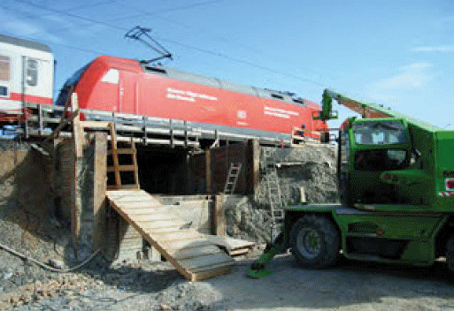
| Abb. 12-12: | Für den kurzzeitig in der Nähe des Gleisbereichs eingesetzten Teleskopstapler besteht die Gefahr einer unbeabsichtigten Annäherung an die Fahrleitung. Es wird eine Bahnerdung eingesetzt. |
Bei Gerüstbauarbeiten in der Nähe des Gleisbereichs (Abb. 1-1, Abb. 12-13) besteht die Gefahr, dass Beschäftigte mit Gerüstbauteilen in den durch Druck- und Sogeinwirkungen gefährdeten Bereich, in das Lichtraumprofil oder in die Nähe der Fahrleitung geraten. Bei Montage und Demontage, aber auch bei den Arbeiten auf dem Gerüst besteht die Gefahr, dass Bauteile des Gerüsts, Werkzeuge oder Baumaterialien herabstürzen und dadurch den Bahnbetrieb gefährden.
Kann der Absturz von Materialien in den Gleisbereich nicht durch das Arbeitsverfahren oder durch ausreichend großen Abstand zuverlässig ausgeschlossen werden, muss das Gleis während der Gerüstmontage und –demontage gesperrt werden. Während Auf- und Abbau des Gerüsts für Hangsicherungsarbeiten (Abb. 12-13) ist mit unbeabsichtigtem Hineingeraten von Gerüstmaterial in den Schutzabstand der Fahrleitung zu rechnen. Auf- und Abbau dürfen daher – bei dem Gerüst Abb. 12-13 zumindest im unteren Gerüstbereich – nur ausgeführt werden, wenn das benachbarte Gleis gesperrt und die Fahrleitung dieses Gleises ausgeschaltet ist. Um Materialabsturz in den Gleisbereich während der Gerüstnutzung auszuschließen, kann der dreiteilige Seitenschutz mit einer geschlossenen Schutzwand oder mit Fangnetzen ergänzt werden.
Wird das Arbeitsgerüst in der Nähe einer elektrifizierten Gleisanlage im Rissbereich der Fahrleitung (Abb. 4-7 und 12-13) aufgebaut, sind die erforderlichen Schutzabstände einzuhalten (Kap. 4.2) und es ist eine Bahnerdung der gesamten Gerüstkonstruktion erforderlich.
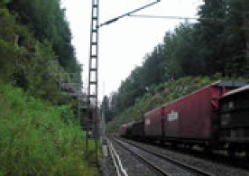
| Abb. 12-13: | Arbeitsgerüst für Hangsicherungsarbeiten in der Nähe des Gleisbereichs. |
Beim Bau einer Brücke über eine Bahnstrecke kann Anlass bestehen, die Gleisseite zu wechseln. Eine FA (Abb. 12-14, 12-15) ist erforderlich (Kap. 2.2) und es sollten Teile der Baustelleneinrichtung (Werkzeugcontainer, Kleingeräte, Sanitäranlagen) beidseits der Gleisanlagen bereitgehalten werden, um Anlässe zum Queren der Gleise soweit wie möglich auszuschließen. Wenn Arbeiten im Gleisbereich erforderlich sind, sind hierfür Sicherungsmaßnahmen durch die BzS einzurichten, z. B. kurzzeitige Sperrung oder zeitweiser Einsatz von automatischen Warnsystemen oder Sicherungsposten. Für den Wechsel zwischen den Arbeitsbereichen beidseits der Bahnstrecke müssen sichere Möglichkeiten bereitgestellt werden, z. B. ein Firmenfahr- zeug, mit dem die Kolonne die Gleisseite am nächsten Bahnübergang wechselt.
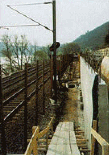
| Abb. 12-14: | Bauzaun als Feste Absperrung zwischen Brückenwiderlager und Gleisanlage. |
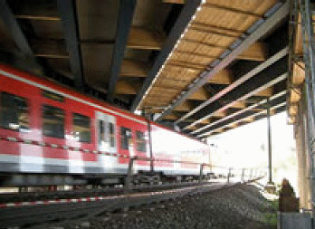
| Abb. 12-15: | Feste Absperrung beim Bau einer Brücke über eine Bahnstrecke. Zum Schutz vor Annäherung an die Fahrleitung und vor herabfallenden Teilen sind die Trägerzwischenräume dicht zu schließen. |
Vom Lehrgerüst darf kein Werkzeug oder Material auf die Gleisanlage abstürzen können. Das Lehrgerüst ist dafür nach unten vollständig abzudichten (Ausbohlung und Folie), Abb. 12-16, 12-17. Beim Versetzen schwerer Lasten in der Nähe des Gleisbereichs (z. B. gleisseitige Pfeilerschalung) sollte geprüft werden, ob eine Gleissperrung erforderlich ist. Beim Versetzen von Lasten über der Gleisanlage (z. B. Stahlträger, die die Überbauschalung tragen, Schalungselemente des Überbaus) müssen alle Gleise unter dem betreffenden Feld des Lehrgerüsts gesperrt sein.
Bei Ortbetonbrücken sollte die Konstruktion der Überbauschalung so geplant werden, dass einfach und schnell ein- und ausgeschalt werden kann. Dafür können Schalungsblöcke verwendet werden, die einschließlich Seitenschutz am Boden vorzufertigen sind und nach dem Vorspannen und Absenken des Traggerüsts per Kran und Traverse entfernt werden können. Um den Abstand zwischen der Brückenunterseite und der Fahrleitung für die notwendige Bauhöhe des Traggerüsts zu vergrößern, kann die Fahrleitung während der Brückenbauarbeiten abgesenkt oder der Überbau überhöht hergestellt und nach dem Vorspannen auf die endgültigen Lager abgesenkt werden. Um die Arbeiten oberhalb der Gleisanlage und die Sperrzeiten zu minimieren, werden häufig Fertigteile eingesetzt (z. B. Fertigteilträger, die durch eine Ortbetonplatte ergänzt werden).
Bei Arbeiten auf dem Lehrgerüst sind Maßnahmen zum Schutz vor Annäherung an die Fahrleitung erforderlich. Eine Situation wie in Abb. 12-16 ist nicht zulässig: Hier
besteht die Gefahr, dass der Schutzabstand zur Fahrleitung mit Werkzeug oder Material unterschritten wird (z. B. Nachgreifen bei einem Schalbrett, das aus der Hand zu fallen droht). Das Gleis unter dem Brückenfeld hätte erst wieder in Betrieb genommen werden dürfen, nachdem die Trägerzwischenräume dicht und tragfähig geschlossen sind und an den Rändern der Trägerlage eine geschlossene Schutzwand hergestellt ist, die durch ihre Höhe und Anordnung das Erreichen der Fahrleitung von Hand und das Hinüberfallen von Baumaterialien ausschließt, Abb. 12-17 [38].
Die Stahlkonstruktion des Lehrgerüsts (Abb. 12-17 rechts, Abb. 12-18, 12-19) bzw. die Stahlträger des Brückenbauwerks (Abb. 12-17 links, Abb. 12-19) müssen gemäß Erdungsplan mit der Bahnerde verbunden werden, vgl. Kap. 4.2.
Werden z. B. zur Herstellung der Brückenkappen oder bei Sanierungsarbeiten auf dem Überbau verfahrbare abgehängte Arbeitsbühnen eingesetzt, müssen diese die gleichen Anforderungen wie das Lehrgerüst erfüllen: Die Unterschreitung des Schutzabstandes zur Fahrleitung muss durch technische Maßnahmen ausgeschlossen sein (z. B. vollständige Abdichtung der Arbeitsbühne nach unten, geschlossener und erhöhter Seitenschutz, keine herabhängenden Konstruktionsteile, Kabel usw.) und es muss eine Bahnerdungsverbindung hergestellt sein, die das Verfahren des Gerüsts zulässt.
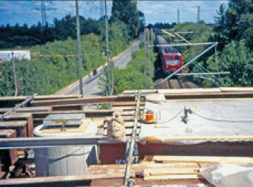
| Abb. 12-16: | Die Arbeiten auf der Trägerlage sind nicht zulässig, da Gefahr besteht, dass Baumaterial in das Betriebsgleis fällt oder die Fahrleitung mit händisch bewegtem Material erreicht wird. |
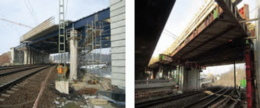
| Abb. 12-17: | Geschlossene Schutzwand über der Gleisanlage, um Materialabsturz und Gefährdung durch die Fahrleitung auszuschließen (Pfeilerbereiche: 3-teiliger Seitenschutz ist zu ergänzen). Die Höhe der Schutzwand richtet sich nach [38]. |
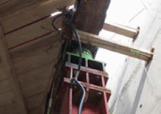
| Abb. 12-18: | Verbindung zur Bahnerdung am Jochträger und an den Stützen des Traggerüsts. |
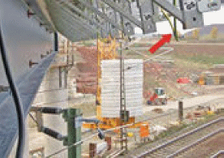
| Abb. 12-19: | Verbindung zur Bahnerdung am Traggerüst an den Trägern der Kappenschalung. |
Die BzS muss bei Bahnsteigpflege- und Winterdienstarbeiten die örtlichen und betrieblichen Bedingungen berücksichtigen und entscheiden, welche Sicherungsmaßnahme anzuwenden ist, siehe hierzu auch Kap. 5 „Arbeiten in Kleingruppen und unter Selbstsicherung“. Der Unternehmer prüft gemäß Kap. 5 Eignung, Qualifikation (DB: Funktionsausbildung) und Anzahl der Beschäftigten und entscheidet, ob die Art der Tätigkeit die vorgesehene Sicherungsmaßnahme zulässt.
Sowohl beim Winterdienst in Gleisen als auch bei Bahnsteigpflegearbeiten dürfen die Maßnahmen „Fahrt sicher am Beginn der Annäherungstrecke erkennen“ und „Anzeichen der Annäherung von Fahrten sicher und rechtzeitig deuten“ bei Geschwindigkeiten über 200 km/h nicht angewendet werden.
Bahnsteigpflegearbeiten umfassen Reinigung, Winterdienst und Beseitigung unerwünschten Aufwuchses auf Verkehrsflächen von Bahnsteigen und die damit zusammenhängenden Tätigkeiten, wie z. B. Besichtigungs-, Kontroll- und Lerngänge. Bei Bahnsteigpflegearbeiten können Gefährdungen durch die aerodynamischen Kräfte von Fahrten im Bahnsteiggleis entstehen, wenn sich die Beschäftigten im Gleisbereich dieses Gleises aufhalten (vgl. Anhang 3).
Bahnsteige können verschiedene Höhen über Schienenoberkante haben. Ein für die Reisenden „komfortabler“ Bahnsteig hat eine Höhe von 0,76 m über Schienenoberkante. Wegen der Fahrzeugumgrenzung hat die Vorderkante dieses Bahnsteiges von Gleismitte des Bahnsteiggleises einen Abstand von 1,70 m.
Der Gleisbereich reicht, z. B. bei einer zulässigen Geschwindigkeit im Bahnsteiggleis von 120 km/h, seitlich bis 2,3 m von Gleismitte. Dann befindet sich, gemessen ab Bahnsteigkante in Richtung Bahnsteigmitte, ein 0,6 m breiter Streifen des Bahnsteigs im Gleisbereich. Für Arbeiten in diesem Bereich muss der Unternehmer den Bahnbetreiber verständigen, um eine Sicherungsmaßnahme festlegen zu lassen.
Wird bei den Arbeiten auf dem Bahnsteig die Grenze des Gleisbereichs des Bahnsteiggleises nicht überschritten, muss der Unternehmer beurteilen, ob ein Hineingeraten in den Gleisbereich möglich ist und Sicherungsmaßnahmen vom Bahnbetreiber festgelegt werden müssen. Erst wenn die Sicherungsmaßnahmen durchgeführt sind, darf mit den Arbeiten begonnen werden. Bei den Arbeiten auf dem Bahnsteig ist Warnkleidung zu tragen.
Zur einfacheren Orientierung im Zusammenhang mit Bahnsteigpflegearbeiten hat die DB geregelt, dass der Gleisbereich bis zu einer Geschwindigkeit
ab Bahnsteigkante in Richtung Bahnsteigmitte angesetzt werden darf.
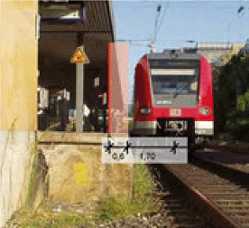
| Abb. 12-20: | Grenze des Gleisbereichs auf dem Bahnsteig für eine Geschwindigkeit von 120 km/h im Bahnsteiggleis. |
Im Winter müssen Bahnsteige von Schnee und Eis befreit und gestreut werden. Durch Glätte auf dem Bahnsteig erhöht sich für die Beschäftigten des Winterdienstes die Gefährdung, in den Gleisbereich des Bahnsteiggleises hineinzugeraten oder an der Bahnsteigkante auszurutschen. Durch Schnee gedämpfte Fahrgeräusche und durch Schneefall, Nebel oder Regen beeinträchtigte Sicht erschweren das Erkennen von Zugfahrten. Im Gleisbereich eines nicht gesperrten Gleises (Abb. 12-20, Anhang 3) dürfen keine Geräte abgelegt werden und es darf nicht maschinell geräumt werden, hier muss die Räumung von Hand erfolgen. Arbeiten an der Bahnsteigkante sollen bei gesperrtem Bahnsteiggleis erfolgen.
Wenn für den Winterdienst Gleise betreten werden müssen, sind bei der Festlegung des Sicherungsverfahrens für Alleinarbeiter oder Gruppen von bis zu drei Beschäftigten (Kap. 5) die witterungsbedingten zusätzlichen Gefährdungen zu berücksichtigen:
In diesen Fällen sind die Maßnahmen „Fahrt sicher am Beginn der Annäherungsstrecke erkennen“ und „Anzeichen der Annäherung von Fahrten sicher und rechtzeitig deuten“ ungeeignet. Das Arbeitsgleis bzw. die zu räumende Weiche sollten dann für die Arbeiten gesperrt werden.
Wenn Sicherungsposten eingesetzt werden, muss die Signalwahrnehmbarkeit jederzeit gewährleistet sein, dabei sind zu berücksichtigen:
Werden die Bahnsteigpflegearbeiten und der Winterdienst von bis zu drei Beschäftigten und nach den Regelungen des § 6 (1) BGV/GUV-V D 33 [14], [15] durchgeführt, gelten die Regelungen des Kap. 5 entsprechend.
Arbeiten zur Vegetationspflege erfolgen i. d. R. außerhalb des Gleisbereichs, es ist jedoch immer zu prüfen, ob damit zu rechnen ist, dass die Beschäftigten in den Gleisbereich bzw. in die Nähe der unter Spannung stehenden Teile der Fahrleitungsanlage (vgl. Kap. 4) hineingeraten können. Dies kann z. B. der Fall sein, wenn
Die häufig schnell wandernden Arbeitsstellen zur Vegetationspflege können nur dann durch automatische Warnsysteme gesichert werden, wenn die akustische Planung ergibt, dass die Warnsignale trotz der hohen Störschallpegel der Freischneider und der weiteren Maschinen (z. B. Mulcher) sicher hörbar sind. Das Sicherungsunternehmen legt Signalpegel, Signalgeberanzahl und maximalen Abstand der Signalgeber fest. Von Hand tragbare funkangesteuerte kollektive akustische Signalgeber (Abb. 2-15) werden den Beschäftigten durch Sicherungspersonal nachgeführt. Beim Einsatz mobiler funkgestützter Warnsysteme sind Vorgaben des Bahnbetreibers bzgl. der Arbeitsstellengröße und der je Arbeitsstelle maximal zulässigen Signalgeber zu beachten. Die Beschäftigten müssen wissen, in welchem Abstand vom Warnsignalgeber sie die Signale noch sicher hören können. Vor Arbeitsbeginn ist stets eine Wahrnehmbarkeitsprobe bei laufenden Maschinen und angelegter persönlicher Schutzausrüstung durchzuführen. Die Beschäftigten müssen wegen der hohen Störschallpegel der Freischneider Gehörschutz tragen (Eignung für das Signalhören im Gleisoberbau, Bemerkung „S“ in der Liste der geprüften Gehörschützer [18]).
Die Auslösung der Warnsysteme muss über Schienenkontakte erfolgen, wenn dies im Sinn einer Risikominimierung gerechtfertigt ist (Vergleich des Zusatzaufenthaltes im Gleisbereich für Montage und Demontage der Schienenkontakte mit dem Arbeitsumfang). Ist dies nicht der Fall, kann die Auslösung des Warnsignals nach Festlegung durch die BzS per Funkhandsender durch den Außenposten erfolgen. Eine Sicherungspostenkette mit elektrischen Signalgebern ist ebenfalls möglich, jedoch nur eine nachrangige Alternative zur technischen Auslösung bzw. Funkübertragung des Warnsignals (vgl. Kap. 2).
Der Einsatz von Absperrposten zur Sicherung von Arbeitsstellen zur Vegetationspflege ist im Regelfall nicht möglich, da einerseits die Absperrposten den in der Betriebsanleitung festgelegten Gefahrbereich von Freischneidern einhalten müssen (Richtwert: 15 m, Abb. 12-22) und damit nicht mehr den erforderlichen unmittelbaren Zugriff auf die Beschäftigten haben und andererseits damit zu rechnen ist, dass sich die Beschäftigten im Verlauf der Arbeit über eine größere Strecke längs des Gleises verteilen.
Zur Verbesserung der Signalwahrnehmbarkeit können bei Arbeiten außerhalb des Gleisbereichs mit der Gefahr, in diesen hineinzugeraten, für den besonderen Fall „schnelle Durcharbeitung bei der Vegetationspflege“ auch automatische Warnsysteme mit funkangesteuerten individuellen Signalgebern getragen werden, die mit dem Gehörschutz kombiniert werden, Abb. 12-23, die ggf. mit risikominimierenden Maßnahmen kombiniert werden müssen.
Der Unternehmer ist dafür verantwortlich, dass die Beschäftigten vor Beginn der Arbeiten in die festgelegten Sicherungsmaßnahmen eingewiesen werden (Anhang 1) und dass das Tragen der erforderlichen persönlichen Schutzausrüstung (Kopfschutz, Schnittschutzkleidung, für das Signalhören geeigneter Gehörschutz, Warnweste, ggf. individuelle Warnsignalgeber) durchgeführt und überwacht wird.
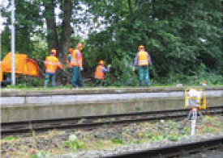
| Abb. 12-21: | Vegetationspflege: Sicherung mit händisch mitgeführten Signalgebern. |
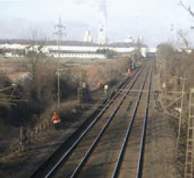
| Abb. 12-22: | Vegetationspflege mit Freischneidern: da die Beschäftigten sich längs des Gleises weit verteilt haben, ist eine Sicherung mit Absperrposten nicht möglich. Die Wahrnehmbarkeit der akustischen Warnsignale muss gewährleistet sein. |
Beim Einsatz gleisfahrbarer Maschinen im gesperrten Gleis muss dafür gesorgt werden, dass das Nachbargleis keinesfalls betreten wird, z. B. durch Verriegelung der Ausgänge. Wenn es erforderlich ist, den arbeitenden oder umsetzenden Maschinen auszuweichen, darf dies nur zur gleisfreien Seite des Arbeitsgleises erfolgen.
Wenn erkennbar ist, dass zu fällende Bäume oder abzuschneidende Äste in ein Betriebsgleis fallen können, muss dieses Gleis vor Arbeitsbeginn gesperrt werden und die Fahrleitung muss ausgeschaltet und bahngeerdet/kurzgeschlossen werden. Die individuelle Warnung ist dann keine geeignete Sicherungsmaßnahme, da nicht gewährleistet ist, dass jeder Beschäftigte jederzeit ein Warngerät trägt und da mit arbeitsbedingtem Betreten des Gleisbereichs zu rechnen ist, Abb. 12-24.
Stürzen Bäume oder Äste unerwartet in ein Gleis oder auf die Fahrleitung oder reißen diese herunter, muss die BzS sofort informiert werden, damit Sperrung und Freischaltung durchgeführt werden. Wenn ein Baum oder Ast auf die Fahrleitung gefallen ist und herunterhängt bzw. den Boden berührt, ist ein Schutzabstand von mindestens 10 m einzuhalten. Die Beseitigung darf erst erfolgen, wenn das Gleis gesperrt, die Fahrleitung ausgeschaltet und bahngeerdet/kurzgeschlossen ist und der Arbeitsverantwortliche die Freigabe erteilt hat, den Ast oder Baum zu zerlegen.
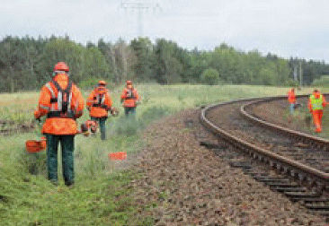
| Abb. 12-23: | Bei der Vegetations- pflege mit schneller Durcharbeitung außerhalb des Gleisbereichs kann der Einsatz automatischer Warnsysteme mit individuellen Warngeräten sicherheitstechnisch gerechtfertigt sein. |
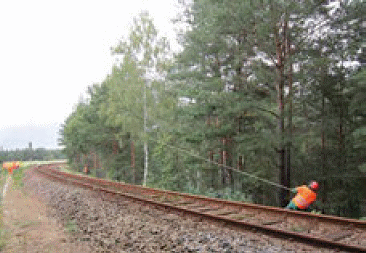
| Abb. 12-24: | Beim Fällen von Bäumen ergibt die Gefährdungsbeurteilung, dass individuelle Warngeräte kein geeignetes Sicherungsverfahren sind. |
Bei Tiefbauarbeiten im Gleisbereich (z. B. Aushub, Horizontalbohrungen, Ramm- und Bohrarbeiten) können Gefahren durch Erfassen oder Freilegen von Kampfmitteln entstehen. Durch Erkundungsmaßnahmen (Sondierung), wie z. B. Magnetometereinsatz von der Oberfläche aus oder in Bohrungen oder durch Radarsensorik, können im Baugrund vorhandene Anomalien (Kampfmittel) erkannt werden (Abb. 12-25), so dass die Kampfmittel der Bergung und Beseitigung durch Fachunternehmen zugeführt werden können.
Da die Kampfmittelerkundung im Vorlauf zu den Tiefbau- bzw. Gleisbauarbeiten durchgeführt wird, sind die zu den folgenden Bauarbeiten geplanten Sicherungsmaßnahmen zum Schutz vor den Gefahren aus dem Bahnbetrieb (z. B. FA, automatisches Warnsystem) oftmals zum Zeitpunkt der Kampfmittelerkundung noch nicht bereitgestellt. Der Auftraggeber der Kampfmittelerkundung bzw. der Sicherungsmaßnahmen – Infrastrukturunternehmen oder Bauunternehmen – ist dafür verantwortlich, dass auch die Trupps der Kampfmittelerkundung gegenüber den Gefahren aus dem Bahnbetrieb im erforderlichen Umfang gesichert und in die Sicherungsmaßnahmen eingewiesen werden.
Die Sicherungsmaßnahmen (Gleissperrung, FA, automatisches Warnsystem, Sicherungsposten, Absperrposten) sind wie bei allen anderen Arbeiten anhand einer Risikobewertung für die Arbeitsstellen der Kampfmittelerkundung und für deren Zugänge (Benutzung von Zuwegungen parallel zu Gleisanlagen, Queren von Betriebsgleisen) festzulegen, vgl. Kap. 2 und 3 (DB AG: RIMINI gemäß Modul 132.0118 [25]).
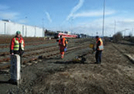
| Abb. 12-25: | Kampfmittelerkundung in einem Bahnhof bei gesperrtem Nachbargleis. |